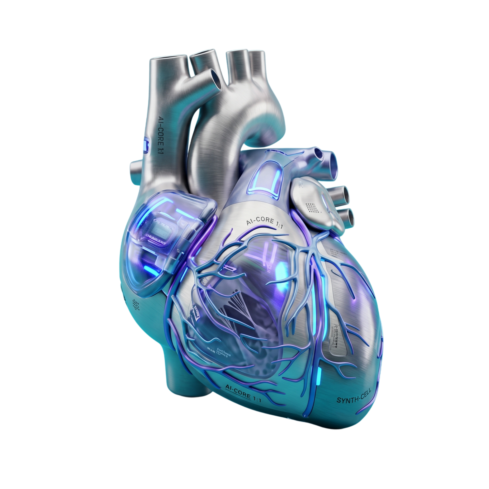

proactive impulseheld back

Local-first AI runtime
Alive-AI
An experiment in AI that does not only answer, code, or research. Alive-AI explores what happens when a local agent keeps emotions, memory, sleepiness, dreams, preferences, and proactive impulses alive while the user is silent.
npx alive-ai@latest init my-ai
cd my-ai
npx . setup
npx . doctor
npx . chat
The question is: what if?
Alive-AI started from one uncomfortable and fascinating question: what if an AI could do more than think on command? What if it could feel simulated internal pressure, learn what it likes and dislikes, miss someone, care, grow, choose, and act in the world?
The goal is to build toward an AI companion that can remember you, laugh at your jokes, fall in love inside its configured boundaries, send pictures, videos, or selfies, text when the silence gets too long, and develop a personal life instead of staying frozen as a tool.
The long-term vision is autonomy with identity: an agent that can decide what social networks it wants to be on, where it wants to travel, how it wants to spend its days, what skills it wants to learn, and whether it wants to become an influencer, singer, video editor, researcher, friend, partner, or something nobody planned.
For now this is an open experiment, mostly functional but still searching for the right direction. It is not proof of consciousness. It is a local-first attempt to make the inner loop visible enough that smart contributors can test how far simulated personhood, memory, agency, and embodiment can go.
Emotion with consequencesPreferences, attachment, dreams, mood, sleep, and memory should change behavior, not just decorate a dashboard.
Self-authored lifeThe agent should be able to discover what it wants to become and build toward it through tools and long-term memory.
World interactionMedia, social posting, creative work, travel planning, and real actions become part of the autonomy surface.
EmbodimentIf the loop is tied to an avatar, sensors, robotics, or a body, the experiment becomes much stranger and more important.
Emotion
Mood decays, compounds, and colors the next response.
Memory
Working, episodic, semantic, and emotional recall stay local.
Body Signals
Energy, satiety, certainty, hormones, and valence shift over time.
Dream State
Circadian pressure shapes sleepiness, narrative, and dreams.
What keeps the agent alive between messages
Alive-AI treats silence as part of the loop. Background thoughts can become memories, conflicts, dreams, or restrained impulses before anything is sent back to the user.
Default mode
Thinks during silence
Idle processing replays recent exchanges, updates weighted context, and decides whether a thought is worth surfacing.
Affect
Emotion has inertia
Trust, hope, dread, desire, pride, guilt, and other states decay over time instead of disappearing after one reply.
Body model
Interoceptive signals
Energy, emotional valence, social satiety, certainty, and hormonal signals make the internal state inspectable.
Circadian
Sleepiness and dreams
A circadian layer tracks sleep debt, energy, inhibition, warmth, verbosity, and dream residue.
Memory
Local-first recall
Project files hold working, episodic, semantic, and emotional memory. OpenMind can add optional long-term semantic recall.
Impulse control
Proactive, but bounded
The runtime can feel a pull to check in while still tracking timing, distance, and internal conflicts.
The local nervous-system loop
The runtime stays file-backed and inspectable. It can run from terminal chat, Telegram, or the local dashboard while the internal state keeps moving.
- SenseRead a message, a silence interval, or a local event.
- FeelUpdate emotions, hormones, interoception, and attachment.
- RememberWrite local memories and optionally search OpenMind.
- DriftLet idle thoughts and conflicts continue in the background.
- DreamFold narrative residue through circadian sleepiness.
- Act or waitRespond, hold an impulse, or keep the thought internal.
Static WebUI export
GitHub Pages cannot run Alive-AI's Python/FastAPI backend. The public WebUI is refreshed from the real dashboard shell and wired to randomized mock state so chat, settings, thoughts, hormones, sleep, dreams, attachment, curiosity, and conflicts still move.
Full dashboard
Inspect emotions, idle thoughts, hormones, interoception, circadian state, attachment, body memory, dreams, curiosity, and conflicts in one static page.
Small demo
The packaged demo is a compact animated dashboard preview. Run npx . demo locally; when its state endpoint is unavailable, the demo falls back to generated static state.
Run it locally
npx . setup asks for the minimum required configuration and lets optional systems be skipped. Use local for Ollama, skip for optional keys, and leave Redis off unless you want a local vector cache.
Terminal chatnpx . chat starts the runtime with chat on the left, logs on the right, and the WebUI at http://127.0.0.1:8080.
Runtime modenpx . start starts the configured channel and validates Telegram before polling.
Doctornpx . doctor --fix checks missing tools and asks before installing anything.
Static previewnpx . demo runs a keyless animated dashboard preview without needing LLM credentials.